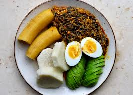

Ampesi and Kontomire

DESCRIPTION
A local Ghanaian dish which made from boiled palantain andd yam
Ampesi
INGREDIENTS
- Yams,plantains
- Water
- Salt
STEPS FOR PREPARING AMPESI
- Slice the yam and plantaians
- Boil the sliced yam and plantains for 15 minutes
- Serve in plate
Kontomire steaw
INGREDIENTS
- Cocoyam leaves
- Onions
- tomatoes
- Palm oil
- Proteins
- Local proteins(kobi and Moni)
STEPS FOR THE PREPARATION OF KONTOMIRE STEW
- Heat the palm oil in a saucepan over medium heat.
- Add the momoni and half of the sliced onions.
- Fry until aromatic and translucent.
- Stir in the blended pepper, ginger, garlic, turkey berries, and remaining onions.
- Cook for about 5 minutes.
- Add the tomatoes and cook down until the oil begins to separate from the sauce.
- Gently pour in the egusi paste without stirring immediately.
- Cover the pot and let it simmer for 3 to 5 minutes so the egusi curdles into small chunks resembling scrambled eggs.
- Stir gently.
- Add your proteins: Stir in the flaked smoked salmon, canned mackerel, and pre-boiled koobi.
- Let it simmer for 5 minutes so the flavors blend.
- Incorporate the greens: Add the steamed kontomire leaves.
- Mix well, lower the heat, and allow it to simmer for another 5 minutes.
- Taste and adjust for salt.